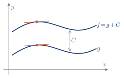
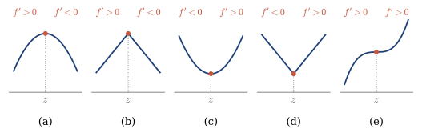
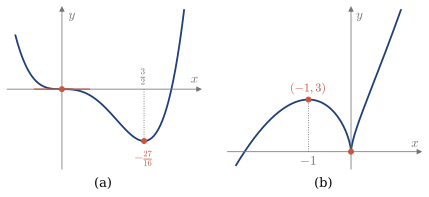
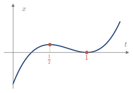

4.4 Crecimiento y puntos críticos
El signo de la derivada dice dónde crece y dónde decrece una función. Sus cambios de signo localizan y clasifican los extremos locales.
Crecimiento y decrecimiento
Definición 4.3
Una función f es creciente en (a,b) si, para todo x_1,x_2\in(a,b) con x_1<x_2, se cumple f(x_1)<f(x_2). Es decreciente si se cumple f(x_1)>f(x_2).
Teorema 4.6
Si f es derivable en (a,b):
- Si f'(x)>0 para todo x\in(a,b), f es creciente en (a,b).
- Si f'(x)<0 para todo x\in(a,b), f es decreciente en (a,b).
- f'(x)=0 para todo x\in(a,b) si y solo si f es constante en (a,b).
Demostración
Sean x_1<x_2 en (a,b). Por el teorema de Lagrange en [x_1,x_2], existe z\in(x_1,x_2) tal que f(x_2)-f(x_1)=f'(z)\,(x_2-x_1). Como x_2-x_1>0, f(x_2)-f(x_1) tiene el signo de f'(z), y eso da (i) y (ii). Si f'=0 en (a,b), f(x_2)=f(x_1), así que f es constante. El recíproco de (iii) es inmediato.
Dos precauciones:
- El teorema vale en un intervalo. Por ejemplo, f(x)=\frac1x tiene f'(x)<0 en todo su dominio, pero f(-1)<f(1): es decreciente en (-\infty,0) y en (0,\infty), no en su dominio entero.
- El recíproco de (i) es falso: f(x)=x^3 es creciente, pero f'(0)=0.
Teorema 4.7
Si f'(x)=g'(x) para todo x\in(a,b), existe C\in\mathbb{R} tal que f(x)=g(x)+C en (a,b).
Demostración
(f-g)'=0 en (a,b), así que f-g es constante, por el Teorema 4.6.

Figura 4.8. Dos funciones con la misma derivada se diferencian en una constante C.
Puntos críticos
Definición 4.4
Un punto z\in(a,b) es un punto crítico de f si f'(z)=0 o si f'(z) no existe.
Por el Teorema 4.1, los extremos locales de f están en sus puntos críticos. No todo punto crítico es un extremo: para clasificarlos se usan estos dos tests.
Teorema 4.8 (Test de la primera derivada)
Sea z un punto crítico de f, con f continua en z:
- Si f' pasa de positiva a negativa en z, f tiene un máximo local en z.
- Si f' pasa de negativa a positiva en z, f tiene un mínimo local en z.
- Si f' no cambia de signo en z, f no tiene un extremo en z.
La razón está en el Teorema 4.6: en (i), por ejemplo, f crece hasta z y decrece a partir de z (Figura 4.9).

Figura 4.9. Test de la primera derivada: (a) y (b) máximo local; (c) y (d) mínimo local; (e) sin cambio de signo, no hay extremo. En (b) y (d), f'(z) no existe.
Teorema 4.9 (Test de la segunda derivada)
Sea f'(z)=0:
- Si f''(z)>0, f tiene un mínimo local en z.
- Si f''(z)<0, f tiene un máximo local en z.
Este test se justificará más adelante, en la sección del error de Taylor. Si f''(z)=0, no decide, y hay que recurrir al de la primera derivada.
Recuerda: hallar y clasificar los extremos locales
- Hallar los puntos críticos: f'(z)=0 o f'(z) no existe.
- Estudiar el signo de f' a cada lado de cada punto crítico.
- Si f'(z)=0, también se puede usar el signo de f''(z).
Ejemplo 4.9
Hallar los intervalos de crecimiento y los extremos locales de f(x)=x^4-2x^3.
f'(x)=4x^3-6x^2=2x^2(2x-3) se anula en x=0 y en x=\frac32. Como 2x^2\ge0, el signo de f' es el de 2x-3:
\begin{array}{c|ccc} & x<0 & 0<x<\frac32 & x>\frac32\\ \hline f' & - & - & +\\ f & \text{decrece} & \text{decrece} & \text{crece} \end{array}
En x=\frac32, f' pasa de negativa a positiva: hay un mínimo local, con f\left(\frac32\right)=-\frac{27}{16}. En x=0, f' no cambia de signo: no hay extremo (Figura 4.10).
Comprobación con f''. f''(x)=12x^2-12x da f''\left(\frac32\right)=9>0, un mínimo. En cambio, f''(0)=0 no decide.
Ejemplo 4.10
Hallar los intervalos de crecimiento y los extremos locales de f(x)=2x^{5/3}+5x^{2/3}.
f'(x)=\frac{10}{3}x^{2/3}+\frac{10}{3}x^{-1/3}=\frac{10}{3}\cdot\frac{x+1}{\sqrt[3]{x}},\qquad x\ne0. Los puntos críticos son x=-1, donde f'(-1)=0, y x=0, donde f'(0) no existe. La función es continua en los dos.
\begin{array}{c|ccc} & x<-1 & -1<x<0 & x>0\\ \hline f' & + & - & +\\ f & \text{crece} & \text{decrece} & \text{crece} \end{array}
Hay un máximo local en x=-1, con f(-1)=3, y un mínimo local en x=0, con f(0)=0 (Figura 4.10). El test de la segunda derivada no serviría en x=0, porque f'(0) no existe.

Figura 4.10. Funciones de los dos ejemplos: (a) x^4-2x^3; (b) 2x^{5/3}+5x^{2/3}.
Ejemplo 4.11
Un objeto se mueve sobre una recta, con posición x(t)=(4t-1)(t-1)^2 para t\ge0. (2020/21 7E)
- ¿Cuándo se mueve hacia la derecha y cuándo hacia la izquierda? ¿Cuándo cambia de sentido?
- ¿Cuál es su mayor rapidez mientras se mueve hacia la izquierda?
(a) Se mueve hacia la derecha si x crece, y hacia la izquierda si x decrece. La derivada es x'(t)=12t^2-18t+6=6(2t-1)(t-1), que se anula en t=\frac12 y en t=1. Es positiva en \left(0,\frac12\right) y en (1,\infty), y negativa en \left(\frac12,1\right). El objeto va hacia la izquierda en \left(\frac12,1\right) y hacia la derecha en el resto, y cambia de sentido en t=\frac12 y en t=1 (Figura 4.11).
(b) La velocidad es v=x', negativa en \left(\frac12,1\right). La mayor rapidez corresponde al mínimo de v: v'(t)=24t-18=0 da t=\frac34, y v''=24>0 confirma el mínimo. Como v\left(\frac34\right)=-\frac34, la mayor rapidez hacia la izquierda es \frac34.

Figura 4.11. Posición del objeto. Cambia de sentido en t=\frac12 y en t=1.
Ejemplo 4.12
La función y(x) cumple x\cos y+y\sin x=0. Calcular y'(x) y decidir si hay un extremo local en el punto \left(\pi,\frac\pi2\right). (2014/15 7E)
Derivando implícitamente, \cos y-x\,y'\sin y+y\cos x+y'\sin x=0\ \Rightarrow\ y'=-\frac{\cos y+y\cos x}{\sin x-x\sin y}. En \left(\pi,\frac\pi2\right), y'=-\frac{\pi/2\cdot(-1)}{-\pi}=-\frac12\ne0. La función es derivable en ese punto y su derivada no se anula, así que no es un punto crítico: no hay extremo local.
Con los contenidos de esta sección puedes hacer los ejercicios 4.16–4.21.